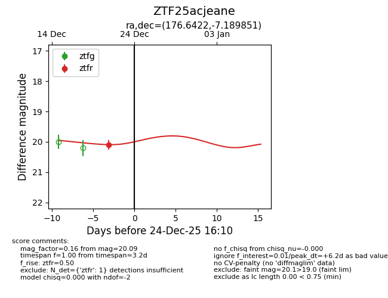
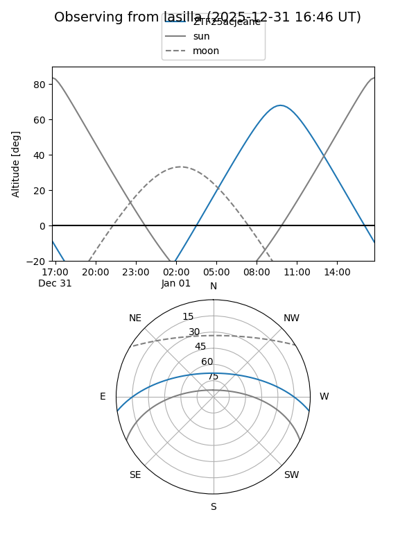
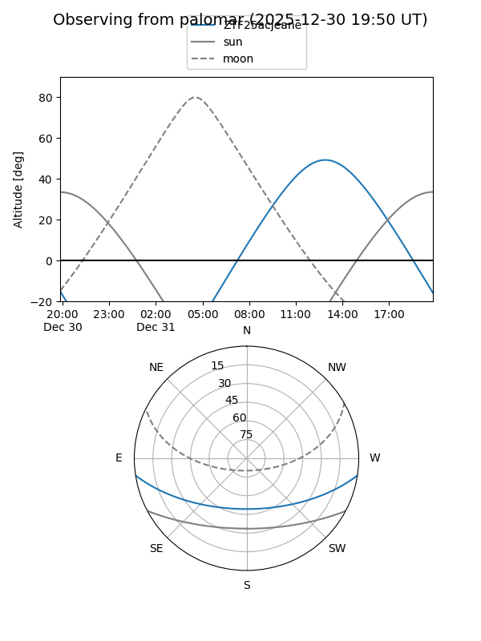
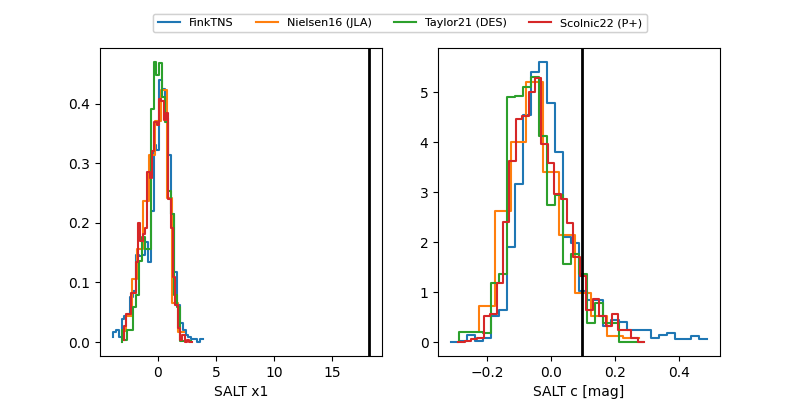

ZTF25acjeane
Target ZTF25acjeane at 2025-12-21 13:42
Aliases and brokers:
FINK: fink-portal.org/ZTF25acjeane
Lasair: lasair-ztf.lsst.ac.uk/objects/ZTF25acjeane
ALeRCE: alerce.online/object/ZTF25acjeane
alt names
ZTF25acjeane (ztf,fink_ztf)
Coordinates:
equatorial (ra, dec) = 176.6422,-7.18985
equatorial (HMS+DMS) = 11:46:34.12,-07:11:23.47
galactic (l, b) = (276.0159,+52.25898)
Flags:
Photometry:
last ztfr=20.09
1 ztfr detections
Lightcurve

Visibility


Additional plots
